Makeful is a place where creativity meets technology — and where making something real is the whole point. We believe the joy of invention belongs to everyone.
"Imagine designing a jacket that doesn't just look incredible — it actually purifies the air while you wear it. That's the future of making."— Linette Manuel, Founder of Makeful
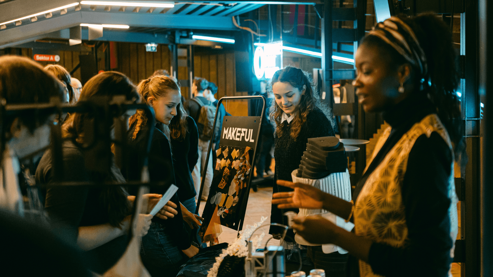
Look at a city. The bridges, the lights, the buildings reaching toward the sky. The music coming from a window. The coat someone designed from scratch. All of it made by people who started with nothing and turned it into something.
That capacity — to imagine, to build, to bring something new into the world — is extraordinary. And it deserves to be celebrated, practiced, and passed on.
Makeful exists to put that experience in more hands. We combine fashion, technology, and design into programs where students don't just learn about innovation — they actually do it. They hold it. They wear it. They show it off.
"The joy of making something that didn't exist before — that feeling is what we're here to give every single student."
From a 3D-printed dress that purifies air, to a garment that responds to sound — Makeful students don't just study technology. They make it wearable, beautiful, and theirs.
Makeful uses fashion design as a way into serious technical learning — 3D printing, materials science, AI tools, electronics, and sustainability — because fashion is a domain where creativity and engineering are inseparable.
When you design a garment that changes colour with temperature, you're doing chemistry. When you 3D-print a wearable structure, you're doing engineering. When you use AI to generate a pattern, you're doing digital design. The technology is real. The learning is deep. And the results are things you actually want to wear.
This is what we call soft engineering — not because it's easier, but because it starts from a place of beauty and meaning, and arrives at the same technical rigour as any other pathway.
A student who designs an air-purifying ballet dress is doing materials science, 3D modelling, environmental engineering, and user-centred design — all at once. The magic is that it never feels like a test. It feels like making art.
Every Makeful project starts with a real question worth asking, and ends with something real worth keeping.
Not because it's less rigorous — but because it starts from creativity, curiosity, and a genuine desire to make something worth making.
Students in Makeful programs work with 3D printers, conductive filaments, sublimation printing, AI design tools, and basic electronics. They sew. They model. They iterate. They fail, figure it out, and try again.
The technical demands are real. The difference is that every skill is learned in service of a project the student actually cares about — which means the learning sticks.
Every Makeful project begins with a real question worth answering. Not "learn CAD so you can someday use it" — but "here's a challenge that matters, let's figure out what we need to solve it." The skills follow naturally from the purpose.
We don't open with lectures. We open with materials. Students touch things, break things, print things, and figure things out on day one. Theory emerges from doing — which means it actually makes sense when it arrives.
The most important thing Makeful changes isn't what students know — it's how they see themselves. Not as someone who might someday create, but as someone who already does. The portfolio is physical proof. The identity shift is permanent.
Every Makeful project starts with a challenge that matters in the real world. Students don't simulate solutions — they build them, wear them, and present them. Here are some of the briefs they work with.
How might we design splints, braces, or therapeutic garments that are more comfortable, more beautiful, and more accessible than anything that exists today? Students explore materials science, ergonomics, and human-centred design.
In cities where smog drops visibility and safety becomes critical, how might we design clothing that makes people glow — literally? Students work with photoluminescent filaments and wearable light design.
How might we create garments using conductive filament that help people notice and respond to their own stress levels? Students explore biometrics, textile electronics, and the intersection of wellness and design.
How might we embed temperature-sensing technology into clothing using thermochromic filaments — creating wearables that change colour to communicate? Students work with materials science and user experience design.
How might we design accessories or garments that actively purify the air around them — in clubs, on transit, in offices? Students combine environmental engineering with fashion design. Vittoria's ballet dress proved it's possible.
Every project Makeful students complete is finished, functional, and genuinely impressive. Not proof that young people can learn technology — proof that they can invent with it.
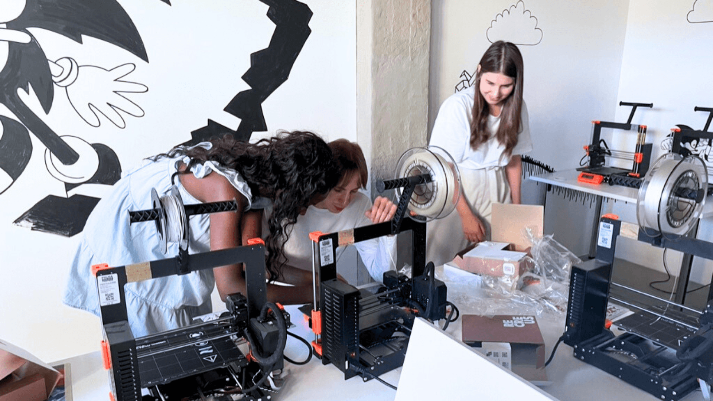
"Imagine designing a jacket that is not just fashionable, but actually purifies the air while you wear it. That's the future of fashion."— Forbes Next Big Thing Stage
Linette's background spans 7 years of K–12 STEAM teaching, a deep foundation in Textile Science and Engineering, and professional experience at companies including IBM. She's spent her career at the intersection of technology and humanity — and her life's mission is to bridge the gap between the two.
As a Fashion-Tech designer, she created an award-winning, sound-generating haptic suit that fuses 3D printing, AI, and wearable electronics. She was awarded the Dean's Prize from Czech Technical University, was a finalist for the 2024 Creative Heroes Award, has been featured in Wired, and has spoken at Forbes Next Big Thing and Future Port Youth.
Beyond Makeful, Linette mentors makers worldwide through the "ELEGOO With Her" International Program and serves as an honorary mentor for Femme Palette. She believes, simply and deeply, that education and technology are key to building a better future for everyone.
Linette spoke at Future Port Youth about what it means to reimagine education through the lens of making — and what happens when you put real creative technology in the hands of young people who are ready for it. This talk captures the thinking behind Makeful: why fashion is the entry point, why joy is the measure of success, and why the future of learning is tangible.
Watch on YouTube ↗"3D printing technology transforms theoretical concepts into tangible experiences, enabling students to bring their ideas to life. It's not just about fashion; it's about empowering students to explore technical subjects, break down barriers, and spark a love for innovation."— Linette Manuel, Co-founder of Makeful
BambuLab featured Makeful's approach to hands-on learning — and how equipping students with real tools transforms not just what they make, but how they see themselves as makers.
Read the Full Article ↗These aren't values we put on a wall. They're the things that actually shape how we design programs, choose partners, and show up for students.
Passive learning. We don't believe in sitting and listening. From day one, students are touching materials, making decisions, and figuring things out by doing them.
Watered-down content. Makeful programs are genuinely challenging. The technology is real, the briefs are complex, and the standards are high — because students rise to meet real expectations.
One-size-fits-all. The student obsessed with aesthetics and the student obsessed with engineering both belong here. We design for the full range of how creative minds work.
Grades as the goal. Assessment anxiety kills curiosity. We care about what students make and how they think — not how they score on a test about what they once memorised.
Playing it safe. The best projects at Makeful are ambitious. We'd rather students attempt something bold and iterate than aim low and finish first.
Joy as a design principle. If learning isn't delightful, something has gone wrong. Joy isn't a nice-to-have — it's what makes learning stick, what makes students come back, what makes the work matter.
Beauty with purpose. We believe the most powerful things humans make are both technically excellent and genuinely beautiful. Fashion is the perfect place to prove that.
Making as identity. The shift from "I learned about making" to "I am a maker" is the most important thing Makeful delivers. A portfolio is proof. But the identity is what lasts.
Different kinds of brilliant. The designer and the engineer see the same problem differently — and that collision is exactly where the best ideas come from. We celebrate every kind of creative mind.
Iteration over perfection. Things will break. Prints will fail. That's not a problem — that's the process. The student who has failed and learned is further ahead than the one who got lucky first time.
Culture is what happens in the room. At Makeful, three things are always present — whether you're in a two-week intensive or a year-long program.
We try things. We ask "what if?" constantly. We don't treat the way something has always been done as a reason to keep doing it that way.
Innovation at Makeful isn't about technology for its own sake — it's about using every tool available to solve problems that actually matter and make things that actually exist.
Questions are the point. Why does this material behave like this? What would happen if we combined these two approaches? What does this problem look like from a completely different angle?
We've found that the best creative breakthroughs come from students who bring wildly different perspectives to the same challenge. Curiosity is what keeps the room electric.
Not the forced, performative kind — the real kind. The satisfaction of holding something you made. The thrill of a print coming out right after three attempts. The look on someone's face when they realise what they just built.
Joy is the signal that something real is happening. We design for it, protect it, and take it seriously as a measure of whether a program is working.
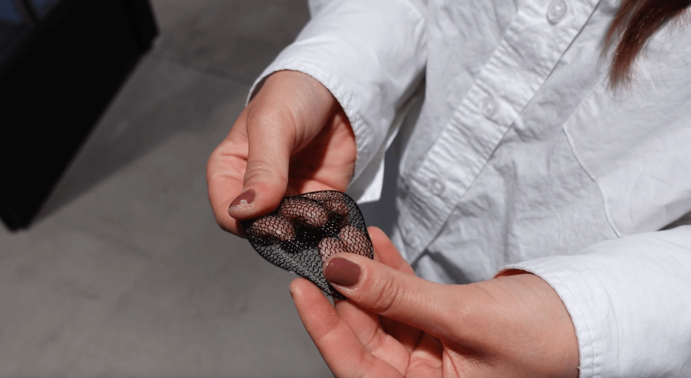
Makeful is for anyone who gets excited by the idea of building something new — who looks at materials and sees possibilities, who wants their creative energy to turn into something real and tangible.
You don't need prior experience with technology. You don't need to know what 3D printing is. You just need to be curious enough to find out.
Creative students who haven't found their way into technology yet. If you love design, art, or fashion — Makeful shows you how far those instincts can take you into engineering and innovation.
Students who love both art and science and feel like they have to choose. You don't. Makeful is built exactly for the place where those two things meet.
Schools looking for something genuinely distinctive. Not another robotics club. A program that produces wearable, finished, portfolio-ready work — and students who call themselves makers.
Makeful is headquartered in Prague and operates globally, with programs reaching schools across the US, UK, and beyond. Here's where we are right now.
Educators equipped to bring FashionTech STEAM into their own classrooms — multiplying Makeful's reach far beyond direct programs.
Students who've completed end-to-end projects — wearable, functional, genuinely impressive work they're proud to show the world.
Schools and educators across 8+ countries bringing FashionTech STEAM to their students.
Makeful partners with organisations that share a genuine belief in the power of making — and in the young people who do it.
Provides hardware and materials support that makes hands-on making possible at scale. Linette also leads the ELEGOO With Her International Mentoring Program.
Provides flexible filament materials and supports our program activities — ensuring every Makeful student has the right tools to bring their wearable ideas to life.
A sister project with a long-term vision: creating fascinating art-tech learning experiences for kids. Where Makeful builds the teachers and programs, SuperCreators is building the wider ecosystem of young makers.
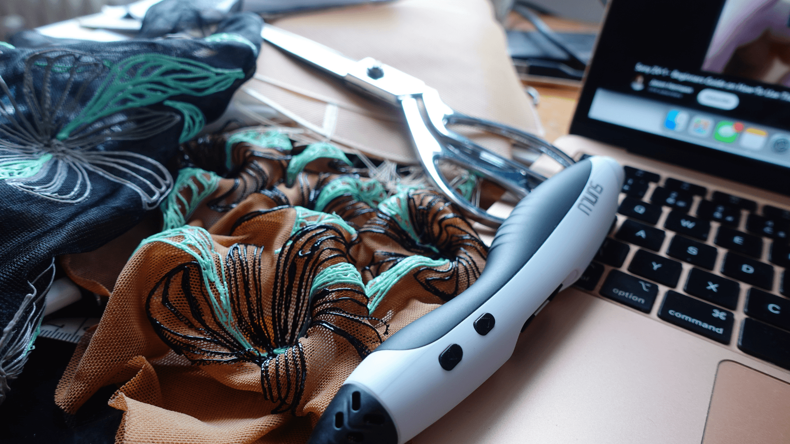
Makeful programs are enriched by a network of world-class practitioners — designers, researchers, engineers, and innovators who give inspirational talks and bring real-world expertise into the room. Students don't just learn about the cutting edge. They hear from the people pushing it.
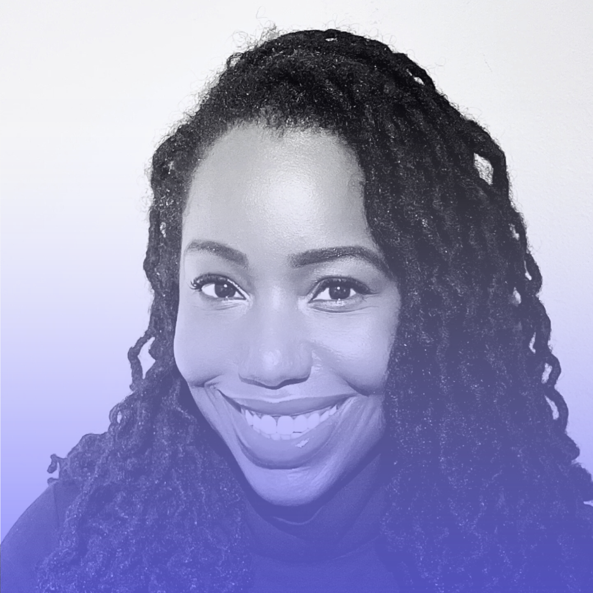
A PhD researcher from the University of the Arts London, Dr. Gosler specialises in smart bras, bra wearables, and experience-centred design. She founded KDN R&D Atelier — a future-focused design lab bridging fashion, technology, and wearer experience — and brings over 15 years of industry expertise to every conversation.
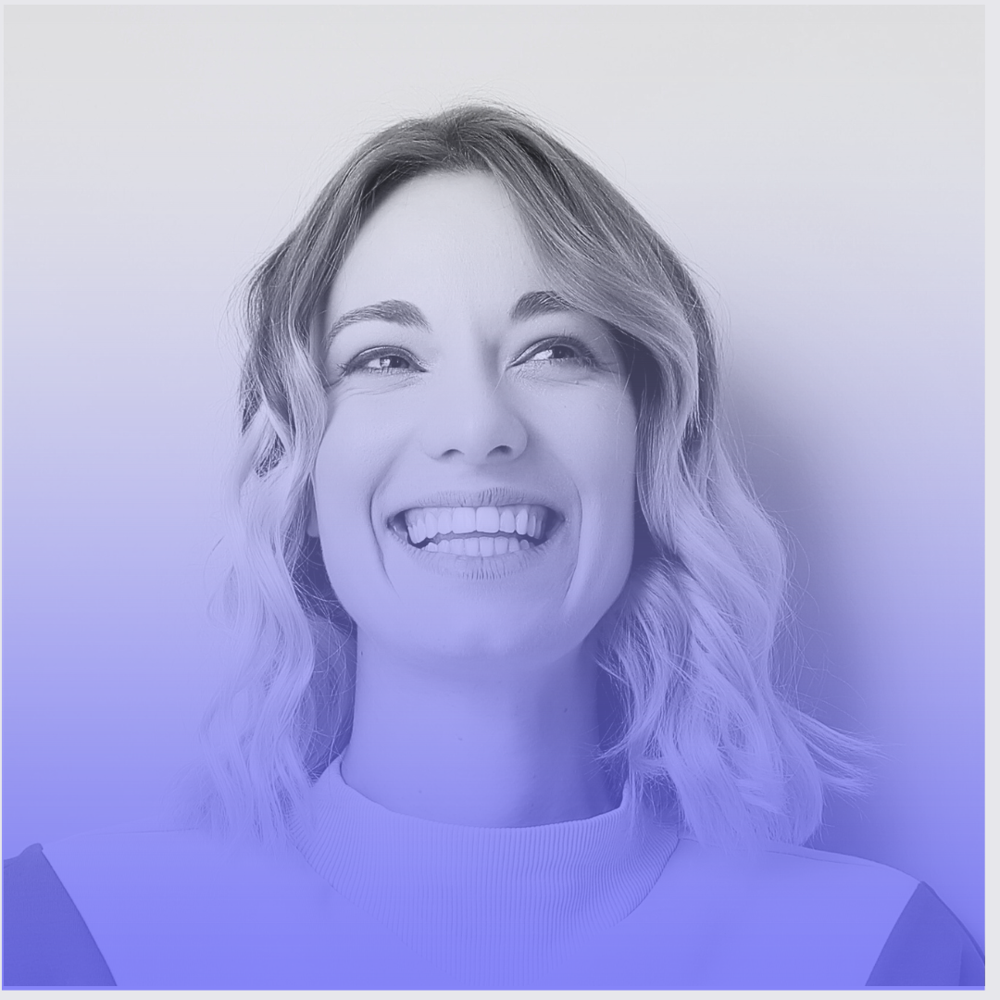
Founder of Variable Seams Studio, Brigitte is a London-based modular fashion designer and educator specialising in 3D-printed wearables made at home. Her Dezeen Award-longlisted collaboration with Balena Science using compostable filament is pushing the boundaries of what sustainable printed fashion can look like.
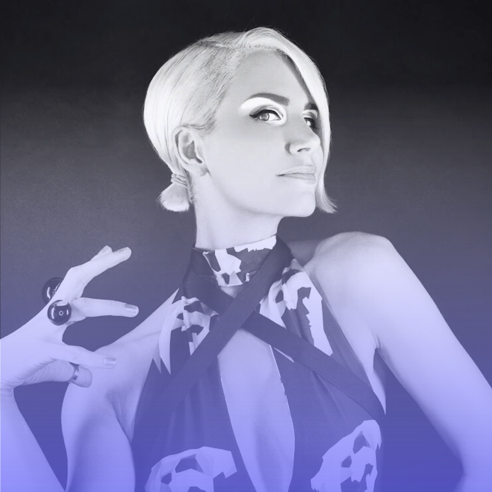
One of the most recognised names in FashionTech, Anouk creates robotic couture that moves, breathes, and responds to its wearer. Her iconic Spider Dress — built with Intel and 3D-printed using sensors and AI — has collaborated with Intel, Google, Audi, Cirque du Soleil, and Swarovski. She is proof that fashion can be an intelligent second skin.
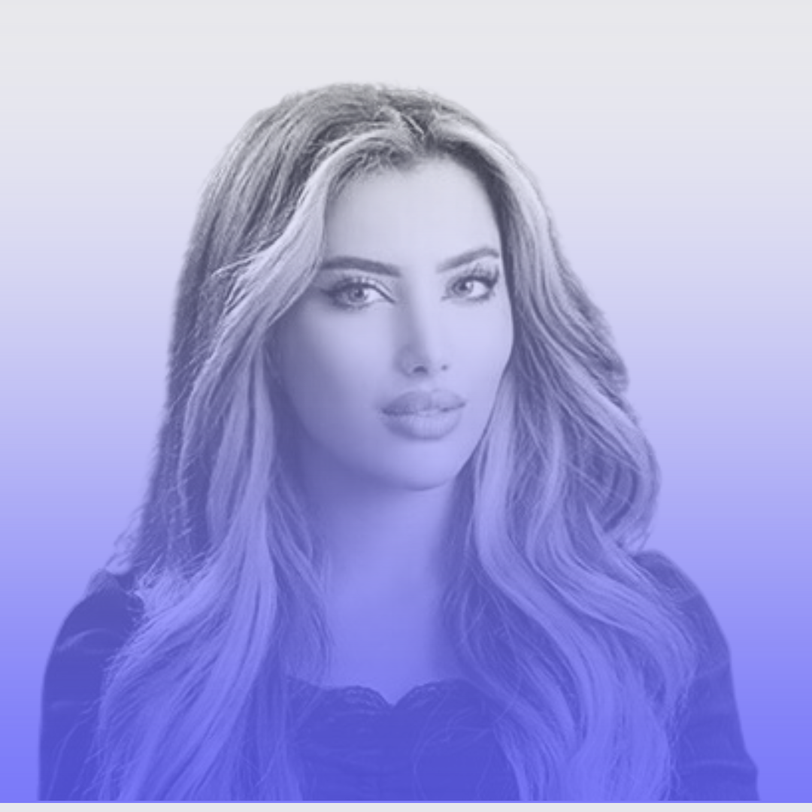
An architectural engineer turned FashionTech innovator, Batoul is the founder of Studio B.O.R. — an avant-garde brand merging 3D printing, robotics, bio-based materials, and parametric design. Her work won the Taipei Design Awards and has been showcased at Paris Fashion Week and the Met Gala, rooted in Jordanian heritage and environmental advocacy.
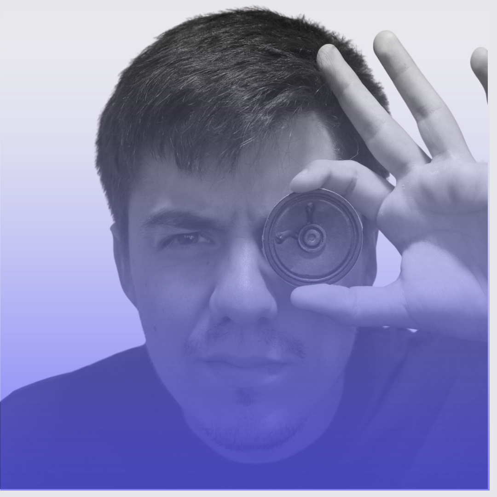
An expert collaborator in the Makeful network whose work and teaching bring depth to our students' understanding of design and technology. Add bio here once confirmed.
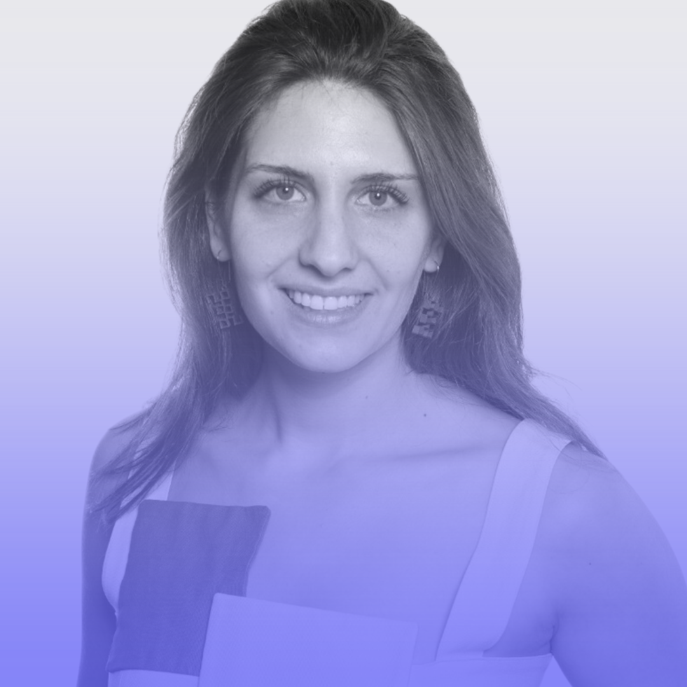
An Israeli fashion designer with a background in architecture, Lilach is the founder of Procode_Dress — a studio pioneering robot-arm 3D-printed garments. Winner of the Gucci Global Design Graduate Show sustainable fashion category at FIT, she has shown at New York Fashion Week and holds a patent-pending method for printing ready-to-wear collections.
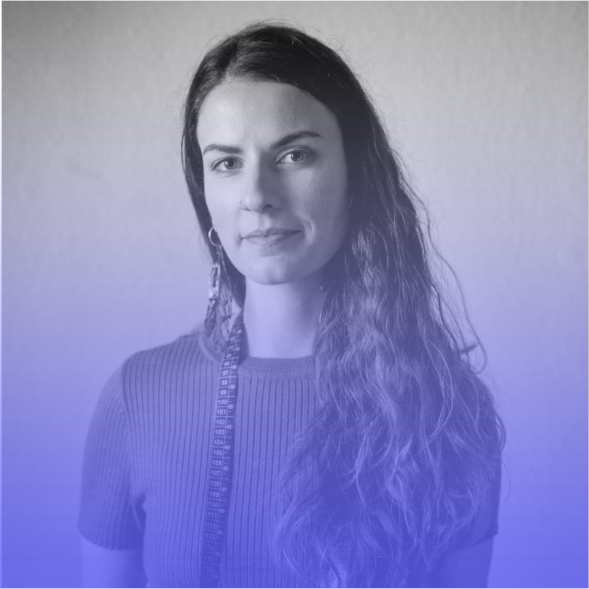
A European FashionTech designer who trained at ESMOD Roubaix and interned at Iris van Herpen, Stéphanie creates entirely 3D-printed haute couture using recyclable materials. Specialising in biofabrication and computational design, she's one of the most compelling voices on the future of sustainable, printed fashion.
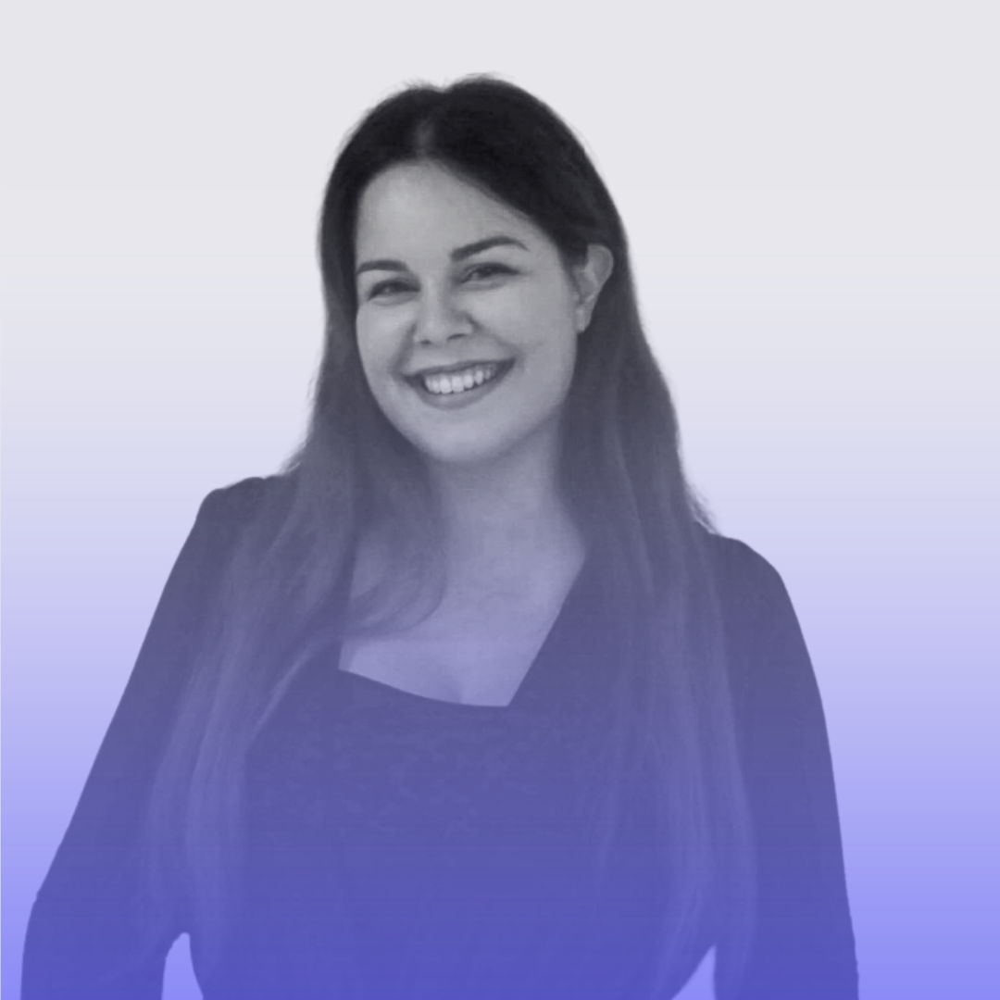
A Fashion Tech designer, researcher, and lecturer specialising in 3D-printed textiles and additive manufacturing in fashion. Susana has spent years developing 100% 3D-printed textile structures and published research on the application of additive manufacturing to fashion — bridging the gap between academic research and real, wearable innovation.
Five or ten years from now, Makeful will have reached thousands of students globally. Each one will have completed at least one project — something physical, something functional, something they made themselves.
More importantly, each one will carry a different sense of what they're capable of. Not "I took a class once." But "I built that. I can build the next thing too."
That's what we're working toward. Not a valuation. Not market share. More people in the world who know — from experience — the joy of making something that didn't exist before.
"Full of making within yourself."
Whether you're a coordinator, a teacher, or a parent who wants something genuinely different for the young makers in your life — we'd love to hear from you.